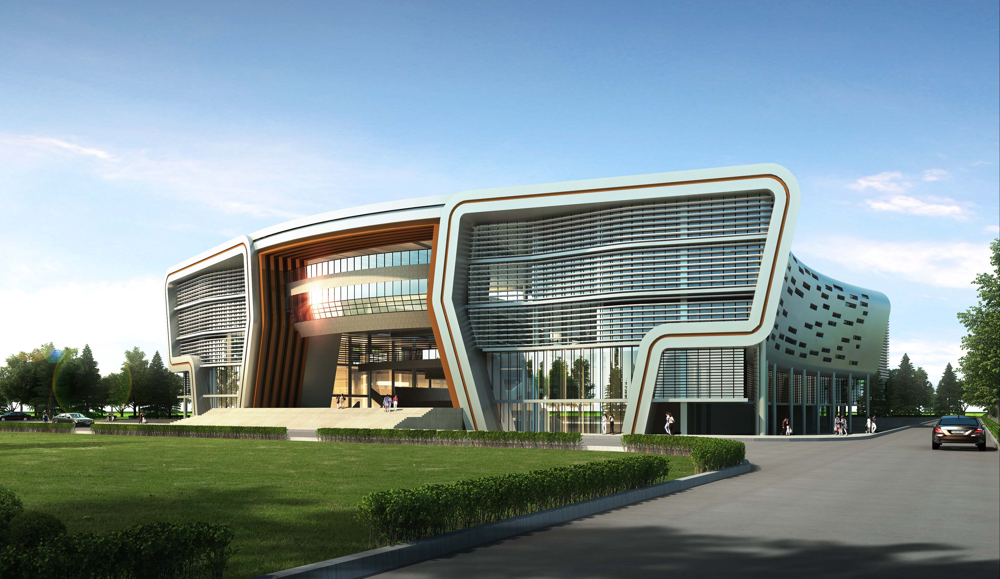
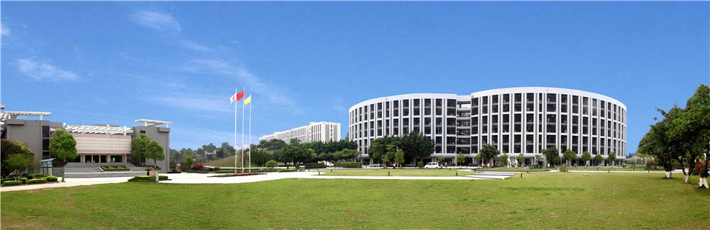

1999年，广东景大经济发展有限公司投资创办了广东南大专修学院，2004年经广东省人民政府批准成为广州科技职业技术学院，2018年升格为本科层次职业学校，2019年经教育部批准，更名为“广州科技职业技术大学”。 
学校形成一校两区的发展布局。广州校区位于白云区钟落潭高校园区内，滨海校区位于茂名市电白区高地智慧城。两校区占地面积共1607亩，建筑面积69.97万平方米。现有全日制在校生约2万人，教学科研仪器设备值2.033亿元。图书馆馆藏纸质图书193万册、电子图书152万册。专任教师1123人，副高级以上专业技术职称教师340人，其中正高级125人，具有硕士学位以上的教师732人，“双师型”专任教师611人。
建有院士工作站、新能源新材料等7个校级科研机构。近5年，获教研科研课题367项，其中省部级以上科研项目121项，经费总额790.08万元。酒店管理专业入选教育部年度中国高校产学研十大优秀案例；2021年获批国家自然科学基金项目依托单位；2022年获批学士学位授予单位；获中国产学研合作创新奖2项、广东省科学技术三等奖1项、广东省轻工业科技进步二等奖1项、广东省电子信息科技进步三等奖1项、广东省质量协会质量技术奖二等奖1项、市级科学技术奖3项。
广科创客梦工场被评为国家众创空间和广东省A级众创空间，广科创谷被评定为广州市创业（孵化）示范基地；荣获“2022年度全国创新创业典范高校”称号；2019年以来获广东省教学成果一等奖1项，二等奖3项；获批中国印刷业高技能人才教育培训基地；获国家专利授权206件, 其中发明专利21件，2014年获广州市专利授权量10强院校（广东省民办高校唯一进入10强学校），跻身全国500强；多次获评广东省“征兵工作先进单位”；获评广东省“绿色学校”、广东省“节水型高校”。
拥有广东省品牌专业1个，省级重点专业2个，省级教学团队2个，省级专业领军人才1人，省级精品资源共享课1门，广东省高水平专业群2个，省级高技能人才培训基地1个，省级公共实训基地（中心） 8个，广东省普通高校工程技术开发中心、广东省高校思政课区域协同创新中心、广东省博士后创新实践基地、广东省教育研究院民办教育研究基地等4个省级以上科研平台。
学校全面贯彻党的教育方针，坚持立德树人，全员育人。学校以“思想政治理论课”为主渠道，2011年思政课建设被评为全省优秀，马克思主义学院教师先后多次获得国家级和省级奖项。其中，2014年全国思政微课比赛一等奖，2017年全国高职高专思政教学比赛二等奖并获全国高职高专思政课教学能手称号。2022年马克思主义学院直属党支部通过广东省委教育工委新时代高校党建示范创建和质量创优工作“样板支部”验收。
学校设有7个学院，建立起以工为主，经、管、文、艺多学科协调发展的专业体系，已开设本科专业18个，专科专业31个。学校深化产教融合、构建职业本科人才培养体系，建有李白千大国工匠工作室等2个技能大师工作室；航空产业学院等7个校企共建产业学院；建有校内实验实训室207间、校外实习实训实践教学基地344家。学校软硬件建设已为培养职业本科人才打下坚实的基础。